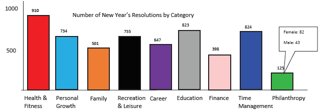

Research
Before, we created out initial design, we searched for visualizations that had been made on the same topic. Below are some of the visualizations we found and what we thought about them.
New Jersey New Year's Resolutions
We did not like this visualization because they used a pie chart and did not show discrete information i.e number breakdown. The pie chart was interactive as seen here but the interactivity did not reveal any more information than before. However, we did like the use different colours for the different categories.

Most Common New Year's Resolutions
We did not like anything particular with this visualization but rather had more questions. The graph does not specify which units are being used. The percentage sign next to one of the numbers indicates that the numbers were percentages however the total is greater than 100.
New Year's Resolutions by State 2016

This visualization used a map to show the most popular resolution in each state in the United States and is closer to what we are trying to do.
One can easily identify which category dominated in each state. Furthermore, they used both color and a symbol to distinguish one category from another which we liked. Most of the symbols were easy to understand and a key(not shown here) was provided.
One of the drawbacks of this design is that people who are not familiar with the map of USA would find it difficult to identify the states. The visualization does not allow for comparisons to be made between the different states or categories.
All resolution categories
More information about this visualization can be seen here. The slider enables a user to select a time range and we decided to add this to our visualization. The visualization also shows the different sub-categories and how they performed within the main category. We did not like the use of pie charts.
Conclusion
After analysing different visualizations, some not shown here, we decided to use an interactive map to display our data. The map would enable us see all the data points at the same as well as make comparisons using different dimensions.
Visual queries
With our visualization, we want to be able to answer the following questions:
- What is the distribution of tweets per category throughout the nation or in a state?
- How do the genders compare in different categories?
- How do any 2 given states compare overall or in a particular category?
- In which state is a particular category prevalent?
- What is the spread of tweets per gender throughout the nation or in a given state?
Initial Design

The initial design included a map and supporting graphs (below) to show discrete information about the data. We used a map in order to show all the data points in the data set at the same time and how they are spread out. Each point on the map represents a tweet and the location from which it was tweeted. Users can get all the information about a data point by clicking on it (shown on image above). The slider below the map allows users to select the range of time
Above the map, there are checkboxes with each checkbox representing a category or a gender (male and female). This will enable a user select any number of categories and that would change the map to show only selected categories.


Visualization
Discussion
The final implementation is very similar to our initial design.This was expected as we did not get a lot of negative feedback after our 1st presentation.
With this visualization, we are able to:
- Show all the information about each tweet and its location on the map
- View all the information for only 1 state or category
- Compare any 2 states
- Compare any number of categories at the same time
- Compare the 2 genders by each category and state
Strengths
The visualization is interactive and enables users to choose what information they would like to view at a particular time. Furthermore, the visualization covered the 4 main categories discussed by Ben Shneiderman. These are Overview, Zoom, Filter and Details on Demand. The map provided the overview while the interactivity provided the other 3.
Overview:
The map overview (before any interaction) allows a user to see all the data points at the same time. From this, the user can notice patterns or see which categories are popular in which areas.
Zoom and filter:
Users can zoom into a particular state and will be able to view that information better. The graphs will also show discrete information about that particular state. Using the same functionality, comparisons can be made between 2 states.
Filtering can be done on both the categories and the genders. This allows users to see information about a specific category in a specific state or on the entire map. Filtering also changes the graphs to enable users get more information about the category or gender they have selected.
Details on demand:
Clicking on a point on the map shows all the information about that data point on the map. This allows a user to get all the information about that tweet while having an overview in the background.
Weaknesses
Conclusion
Team
The group worked together and used the Slack application for communication and file sharing. Google drive was also used to share files as well work collaboratively. All the members agreed on the final design. Some of the work was divided up among the 3 members in the following way:
| Name | Work done |
|---|---|
| Michael Kyeyune | Implementation of the map and coordinates |
| Thandile Xiphu | Implementation of the graphs |
| William Lumala | Editing HTML code and web page layout |